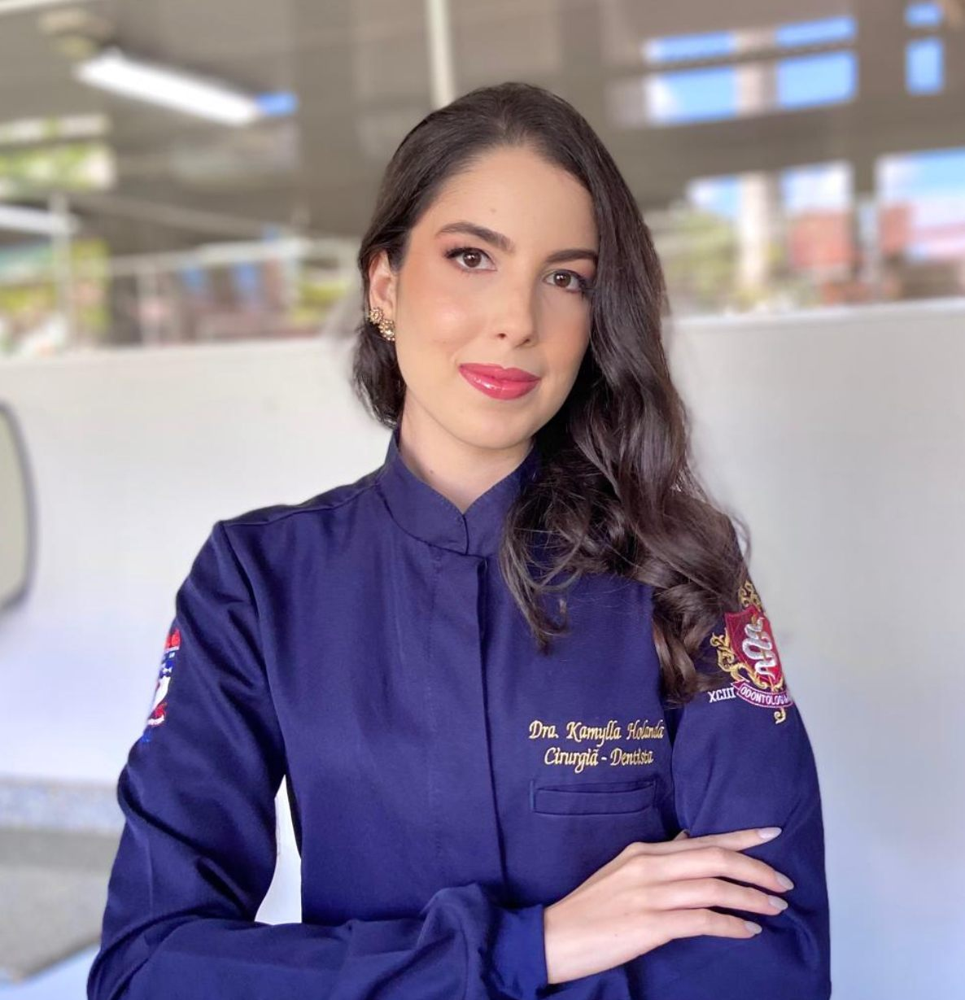
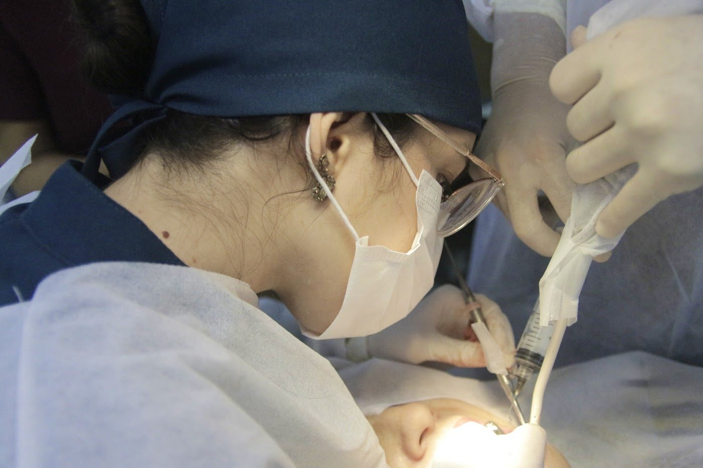

Um sorriso cuidado com calma e explicação.
Clareamento, restaurações, facetas, coroas e limpeza com a Dra. Kamylla Holanda, no Empresarial Humberto Lobo, na Serraria. Atendimento para jovens e adultos.

CRO/AL 6029O que a Dra. Kamylla faz no consultório
Cada caso começa por uma avaliação, com o procedimento explicado antes de começar.
- Clareamento dental Dentes mais claros, com acompanhamento
- Restauração em resina Recupera forma e cor do dente
- Faceta em resina Ajustes de forma e cor no sorriso
- Coroa de porcelana Para dentes muito desgastados ou tratados
- Limpeza e flúor Profilaxia e aplicação de flúor
- Remoção de tártaro Saúde da gengiva em dia
Resultados podem variar de pessoa para pessoa. A indicação depende de avaliação clínica.

Para quem tinha trauma de dentista
É o que os pacientes mais contam: a Dra. Kamylla explica cada etapa enquanto faz o procedimento e deixa a pessoa à vontade. Atende de crianças a adultos.
O que dizem os pacientes
5,040 avaliações no Google
“Tinha trauma de dentista, mas dra kamylla desbloqueou meu cuidado com o sorriso. Com uma atenção e cuidado único, gostei muito.”
Victor M.
“Excelente profissional atenciosa fazendo o procedimento e explicando exatamente o que estava fazendo sem contar com uma simpatia enorme.”
Julliano U.
“Amei seu atendimento, uma profissional excelente, muito atenciosa, educada. Deixa o paciente muito a vontade.”
Geogina S.
“Gostei muito do seu atendimento e a faceta que vc fez ficou ótimo, nota 10, vc me tratou com muita gentileza.”
Silvio S.
“Atendimento de excelência, com uma profissional de excelência, dona de um conhecimento ímpar e condução de consulta sem igual.”
Paloma M.
“Uma excelente profissional.. ela atendeu minha filha com toda a dedicação e amor parabéns.”
Nayara S.
“Com muita paciência resolveu um grande problema que tinha no dente.”
Weslley M.
“Ótimo atendimento, a médica é muito atenciosa, além de contar com um ambiente muito agradável e organizado.”
Terliz R.
“Profissional maravilhosa e cuidadosa, amei os meus procedimentos. Hoje o meu esposo é o seu paciente.”
Jaque C.
“Muito educada simpática e atenciosa aos detalhes, recomendo a todos públicos de jovens a adultos.”
Arthur D.
“Soube atender minhas necessidades e explicar tudo direitinho.”
Eliane F.
“Atendimento excepcional e muito humanizado.”
Paulo R.
Marque sua consulta
- Endereço
- Empresarial Humberto Lobo — Av. Menino Marcelo, 9350, Serraria, Maceió/AL · 57046-000
- Horário
Segunda a sexta 8h às 18h Sábado 8h às 12h - (82) 99647-2183
- @kamyllaholanda_